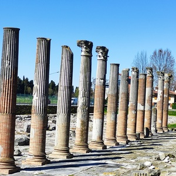
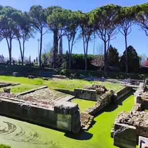
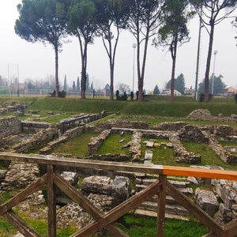

Aquileia is an ancient Roman city located in the north of Italy and is one of the main archeological sites in the region of Friuli-Venezia Giulia, in the Udine province.
During Roman times, Aquileia was one of the most important cities in the Mediterranean Roman Empire. Families were originally of Veneti origin and spoke Latin not Roman.
However, in 90 BC, the original colony came under the Roman tribe of Velina and therefore under the Roman Empire. Most notably, Julius Caesar was a frequent visitor to Aquileia and used the nearby winter camp.
The discovery of the gold fields near to Aquileia in 130 BC brought the growing city more notoriety, and it soon became a place of importance, not only owing to its strategic military position, but as a centre of commerce, especially in agricultural products.
In 169 BC, 1,500 more Latin colonists with their families settled in the city as a reinforcement to the fortification.
Once roads connected Aquileia with the Roman colony of Bologna around 173 BC the city grew in population. The site was of commercial importance because of Baltic amber trade. Up to 3,000 families were settled in the city and Aquileia probably had a population of roughly 20,000.
Aquileia was founded as a colony by the Romans in 180 BC along the Natiso River, on land south of the Julian Alps. The city was a strategic frontier fortification and was intended to protect the Veneti of Rome from invasion.
Today, Aquileia is a town smaller than the colony first founded by Rome with only around 3,500 inhabitants. Over the centuries the site has suffered damage by sieges, earthquakes, floods, and pillaging of the ancient buildings for materials. However, the site of Aquileia, is believed to be the largest Roman city yet to be excavated, it is on the UNESCO World Heritage List.
Recent excavations have revealed some of the Roman town such as a segment of street, the north-west town walls, the river port, and the former baths, amphitheatre, market and cemetery. The National Archeological Museum of Aquileia houses some 2000 statues, mosaics and coins.
180 BC
Founded by the Romans
401 AD
Invaded by King Alaric and the Visigoths
452 AD
Invasion of the Huns
476 AD
End of the Western Roman Empire
1998 CE
Named UNESCO World Heritage Site
The Forum was the place where all the main trading, leisure and administrative activities of Aquileia took place.
The River Port was the thriving heart of Aquileia, a crossroads for trade of goods and travel between the Mediterranean Sea and mainland Europe.
The Market was the very heart of Roman social life and was surrounded by public buildings.
